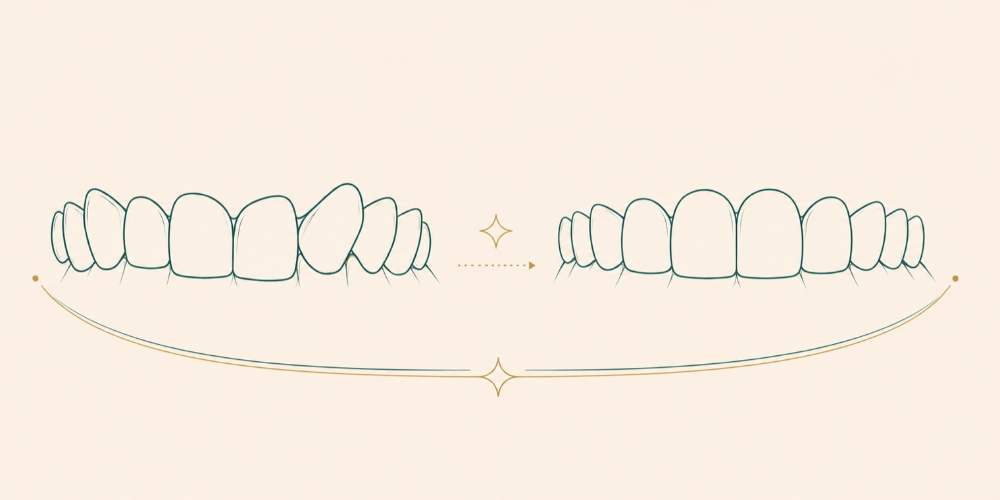

There is more than one way to straighten teeth today: traditional metal braces, tooth-coloured brackets and clear aligners. Which suits you depends on the degree of misalignment, your age and your daily habits. This guide explains the difference between braces and aligners, when each is the stronger choice, how long treatment takes and what happens afterwards, so you can weigh the options before your consultation. The right method for you is confirmed by your dentist after examination.
What orthodontics does
Orthodontics corrects the position of teeth and jaws. The goal is not only appearance: well-aligned teeth are easier to clean, which lowers the risk of decay and gum disease, and a balanced bite improves chewing and speech. Crowding, gaps between teeth and bite problems, where upper and lower teeth meet poorly, are the main concerns orthodontics addresses.
Fixed braces
In fixed treatment, small brackets are bonded to each tooth and a wire running through them moves the teeth gradually. Its main features are:
- Broad range: effective from simple crowding to complex bite problems.
- Continuous action: being fixed, it works around the clock and does not depend on the patient remembering to wear it.
- Choice of look: beyond metal, tooth-coloured (ceramic) brackets offer a less noticeable option.
The most important point in fixed treatment is oral hygiene; plaque gathering around the brackets must be removed with careful, regular cleaning. Interdental brushes and special orthodontic brushes make this easier.
Clear aligners
Clear aligners are custom-made, removable and nearly invisible trays. A series of aligners, changed at set intervals, moves the teeth gradually toward the planned position. Their notable features are:
- Discreet look: being clear, they are barely noticed in daily life.
- Removable: taken out for eating and brushing, which makes hygiene easier.
- Comfort: with no brackets or wires, there is less irritation to the soft tissues.
The success of aligner treatment depends on wearing them for the recommended number of hours each day, usually most of the day. In this sense the treatment relies more on the patient's consistency.
Braces or aligners: how to decide
There is no single "best" between the two; the right option varies by situation. The main factors considered are:
- Degree of misalignment: complex bite problems may be more predictable with fixed treatment; mild to moderate cases may suit aligners.
- Discipline of wear: aligners must be worn consistently; where that is hard to sustain, fixed treatment can be an advantage.
- Aesthetic expectation: if visibility during treatment matters, aligners or tooth-coloured brackets may be preferred.
- Age: in growing children some corrections need fixed appliances and growth guidance.
Your treatment is mapped on a digital plan before it begins, and the options are weighed together with you.
Orthodontics for adults
Orthodontics is often associated with the teenage years, but it can be applied successfully in adulthood too. The biological process that moves teeth continues with age; what matters is not age but the health of the gums and supporting tissues. Adults tend to favour clear aligners and tooth-coloured brackets, and existing restorations or gum recession may shape the plan, which is why a thorough assessment comes first.
When should children start?
An early orthodontic assessment lets problems be caught before they grow. The American Association of Orthodontists suggests a first orthodontic check at around seven years of age [1]. This does not mean treatment starts then; most often the aim is to monitor jaw growth and the eruption of teeth. Catching some simple issues early can prevent more complex treatment later.
How long does orthodontic treatment take?
Treatment time varies with the degree of misalignment and the method chosen; most treatments span from several months to a couple of years. One of the biggest factors is the patient attending appointments regularly and following advice. In aligner treatment, not wearing the trays for enough hours, and in fixed treatment, neglecting hygiene, can both lengthen the process. The exact duration is shared by your dentist once a personal plan is prepared. Because the plan is mapped in three dimensions before it begins, the expected timeline is clear from the start.
After treatment: the retention phase
Orthodontic treatment does not truly end when the braces or aligners come off. To keep the teeth in their new positions, a retention phase is needed, often a thin wire bonded behind the teeth or a clear retainer worn at night. Not using the retainer as advised can let the teeth drift back over time. The period after treatment is as important as the treatment itself.
Questions patients ask
Are aligners as effective as braces?
In suitable cases, clear aligners can give results comparable to braces. For very complex bite problems, fixed treatment may be more predictable. Which suits you is decided by the degree of misalignment.
Is there an age limit for orthodontics?
As long as the gums and supporting tissues are healthy, orthodontic treatment can be done in adults too; there is no upper age limit. In children, some corrections are easier during growth. The right timing is set by examination.
Does it hurt when braces go on?
In the first days after braces or a new aligner, a feeling of pressure and mild tenderness can occur, usually passing quickly. Severe, persistent pain is not expected; if it happens, contact your dentist.
Can I eat everything with aligners?
Because aligners are removed for meals, there is no significant dietary restriction. Only while wearing them are sugary and staining drinks discouraged. After eating, brush and put the aligners back.
Will my teeth move back after treatment?
If retainers are not used as advised, teeth tend to drift toward their old position over time. Following the retention phase is important for keeping the result you achieved.
Sources
- American Association of Orthodontists. Patient information resources. aaoinfo.org
- American Dental Association. Braces and oral care, MouthHealthy patient portal. mouthhealthy.org
- American Academy of Periodontology. Gum health during orthodontic treatment, patient information. perio.org